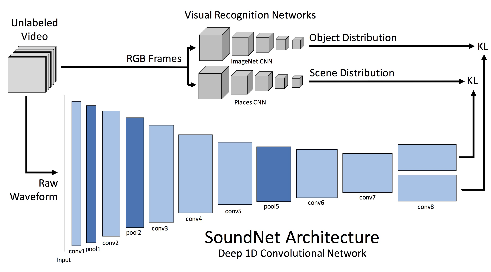

Hou-Ning Hu
Senior Research Engineer, MediaTek
Ph.D., Vision Science Lab
National Tsing Hua University, Taiwan
Ph.D., Vision Science Lab
National Tsing Hua University, Taiwan
Take a look at his résumé [pdf].
last updated in May 2022.
last updated in May 2022.
NEWS:
Apr. 2022 - Our QD-3DT has been accepted to TPAMI!
Oct. 2021 - Successfully defended my dissertation!
Oct. 2020 - Received 2020 Google Ph.D. Fellowship!
Apr. 2022 - Our QD-3DT has been accepted to TPAMI!
Oct. 2021 - Successfully defended my dissertation!
Oct. 2020 - Received 2020 Google Ph.D. Fellowship!
Hou-Ning Hu
is a senior research engineer at MediaTek, working predominantly on high-level vision (detection,
recognition, classification) and machine learning problems.
He earned his Ph.D. at the Department of Electrical Engineering, National
Tsing Hua University.
He worked with Prof. Min Sun as a member of
the Vision Science Lab on Deep
Learning and its applications in Computer Vision.
He was the recipient of the 2020 Google Ph.D. Fellowship in Machine Perception, Speech Technology and Computer Vision field. His research interests span wide applications of computer vision techniques on videos, such as video dynamic, 3D object tracking, depth estimation, visual saliency, super-resolution, and user experience. For 3D object tracking, he works with Prof. Trevor Darrell and Prof. Fisher Yu.
His research recently focused on learning 3D geometry from the visual perception of the surroundings in applications of 3D tracking and multi-sensor fusion. He interned in MediaTek as an Senior AI Research Engineer. Also, he interned in Phiar, an AR navigation startup, as an AI Research Scientist. Before these internships, he participated in CarePLUS.ai, an AI-assisted home care system, as a principal AI technical leader.
He was the recipient of the 2020 Google Ph.D. Fellowship in Machine Perception, Speech Technology and Computer Vision field. His research interests span wide applications of computer vision techniques on videos, such as video dynamic, 3D object tracking, depth estimation, visual saliency, super-resolution, and user experience. For 3D object tracking, he works with Prof. Trevor Darrell and Prof. Fisher Yu.
His research recently focused on learning 3D geometry from the visual perception of the surroundings in applications of 3D tracking and multi-sensor fusion. He interned in MediaTek as an Senior AI Research Engineer. Also, he interned in Phiar, an AR navigation startup, as an AI Research Scientist. Before these internships, he participated in CarePLUS.ai, an AI-assisted home care system, as a principal AI technical leader.
Monocular Quasi-Dense 3D Object Tracking
Hou-Ning Hu,
Yong-Hsu Yang,
Tobias Fischer,
Trevor Darrell, and
Fisher Yu,
Min Sun
IEEE TPAMI 2022
@article{Hu2022QD3DT,
author = {Hu, Hou-Ning and Yang, Yung-Hsu and Fischer, Tobias and Yu, Fisher and Darrell, Trevor and
Sun,
Min},
title = {Monocular Quasi-Dense 3D Object Tracking},
journal = {IEEE Transactions on Pattern Analysis and Machine Intelligence},
year = {2022}
doi = {10.1109/TPAMI.2022.3168781}
}
Joint Monocular 3D Vehicle Detection and Tracking
Hou-Ning Hu,
Qizhi Cai,
Dequan Wang,
Ji Lin,
Min Sun,
Philipp Krähenbühl,
Trevor Darrell, and
Fisher Yu
ICCV 2019
ICCV 2019 Workshop
@inproceedings{Hu2019Mono3DT,
author = {Hu, Hou-Ning and Cai, Qi-Zhi and Wang, Dequan
and Lin, Ji and Sun, Min and Krähenbühl, Philipp and
Darrell, Trevor and Yu, Fisher},
title = {Joint Monocular 3D Vehicle Detection and Tracking},
journal = {ICCV},
year = {2019}
}
3D LiDAR and Stereo Fusion using Stereo Matching Network with Conditional Cost Volume Normalization
Tsun-Hsuan Wang,
Hou-Ning Hu,
Chieh Hubert Lin,
Yi-Hsuan Tsai,
Wei-Chen Chiu,
and
Min Sun
IROS 2019
@inproceedings{WangCCVNorm19,
author = {Wang, Tsun-Hsuan and Hu, Hou-Ning and Lin, Chieh Hubert and Tsai, Yi-Hsuan and
Chiu, Wei-Chen and Sun, Min},
title = {3D LiDAR and Stereo Fusion using Stereo Matching Network with Conditional Cost Volume
Normalization},
journal = {IROS},
year = {2019}
}
Self-Supervised Learning of Depth and Camera Motion from 360° Videos
Fu-En Wang*,
Hou-Ning Hu*,
Hsien-Tzu Cheng*,
Juan-Ting Lin,
Shang-Ta Yang,
Meng-Li Shih,
Hung-Kuo Chu,
and
Min Sun (*indicate equal
contribution)
ACCV 2018 Oral
ECCV 2018 Workshop
@inproceedings{WangACCV18,
author = {Wang, Fu-En and Hu, Hou-Ning and Cheng, Hsien-Tzu and Lin, Juan-Ting and
Yang, Shang-Ta and Shih, Meng-Li and Chu, Hung-Kuo and Sun, Min},
title = {Self-Supervised Learning of Depth and Camera Motion from 360° Videos},
journal = {Asian Conference on Computer Vision (ACCV)},
year = {2018}
}
Self-view Grounding Given a Narrated 360° Video
Shih-Han Chou,
Yi-Chun Chen,
Kuo-Hao Zeng,
Hou-Ning Hu,
Jianlong Fu,
and
Min Sun
AAAI 2018
ICCV 2017 Workshop
@inproceedings{ChouAAAI18,
author = {Chou, Shih-Han and Chen, Yi-Chun and Zeng, Kuo-Hao and Hu, Hou-Ning and Fu, Jianlong
and Sun, Min},
title = {Self-view Grounding Given a Narrated 360° Video},
journal = {AAAI Conference on Artificial Intelligence (AAAI)},
year = {2018}
}
Deep 360 Pilot: Learning a Deep Agent for Piloting through 360° Sports Videos
Hou-Ning Hu*,
Yen-Chen Lin*,
Ming-Yu Liu,
Hsien-Tzu Cheng,
Yung-Ju Chang, and
Min Sun
IEEE CVPR 2017
Oral
(* indicates equal
contribution)
@inproceedings{HuCVPR17,
author = {Hu, Hou-Ning and Lin, Yen-Chen and Liu, Ming-Yu and Cheng, Hsien-Tzu and Chang,
Yung-Ju and Sun, Min},
title = {Deep 360 Pilot: Learning a Deep Agent for Piloting through 360° Sports
Videos},
journal = {IEEE Conference on Computer Vision and Pattern Recognition (CVPR)},
year = {2017}
}
Tell Me Where to Look: Investigating Ways for Assisting Focus in 360° Video
Yen-Chen Lin,
Yung-Ju Chang,
Hou-Ning Hu,
Hsien-Tzu Cheng,
Chi-Wen Huang, and
Min Sun
ACM CHI 2017
@inproceedings{LinCHI17,
author = {Lin, Yen-Chen and Chang, Yung-Ju and Hu, Hou-Ning and Cheng, Hsien-Tzu and Huang,
Chi-Wen and Sun, Min},
title = {Tell Me Where to Look: Investigating Ways for Assisting Focus in 360° Video},
booktitle = {Proceedings of the 2017 CHI Conference on Human Factors in Computing Systems},
series = {CHI '17},
year = {2017},
isbn = {978-1-4503-4655-9},
location = {Denver, Colorado, USA},
pages = {2535--2545},
numpages = {11},
url = {http://doi.acm.org/10.1145/3025453.3025757},
doi = {10.1145/3025453.3025757},
acmid = {3025757},
publisher = {ACM},
address = {New York, NY, USA},
keywords = {360-degree videos, auto pilot, focus assistance, video experience, visual
guidance},
}
Experiences

MediaTek Inc.
Research Engineer Intern
Nov. 2021 - Jan. 2022
High-level Vision Algorithm Development
Phiar Technology
AI Research Scientist Intern
Jul. 2021 - Sep. 2021
In-vehicle ultra-lightweight
road-understanding AI
CAREPLUS.ai
Principal AI Technical Leader
Jan. 2019 - Feb. 2021
Home Care System Architecture
and Data Annotation Pipeline Design
Novatek Microelectronics Corp.
Research Intern
Jul. 2017 - Aug. 2017
Computer Vision Algorithm Development
in Display Gamma Curves Correction
Services
Organizer

2nd 360° Perception and Interaction Workshop.
Principal Organizer
Oct. 2019 - Oct. 2019
Seoul, Korea
1st 360° Perception and Interaction Workshop.
Principal Organizer
Sep. 2018 - Sep. 2018
Munich, Germany
Student Staff
3rd Augmented Intelligence and Interaction (AII) Workshop
Major Student Staff
June 2019 - July 2019
1st Augmented Intelligence and Interaction (AII) Workshop
Major Student Staff
June 2017 - June 2017
The 13th Asian Conference on Computer Vision (ACCV’16)
Student Staff
Nov. 2016 - Nov. 2016
Reviewer
ICCV 2019, WACV 2020, CVPR 2020, ECCV 2020, ICRA2021
1st 360PI Workshop, 2nd 360PI Workshop
Side Projects

Tensorflow Implementation of SoundNet
A Tensorflow implementation of SoundNet from the paper "SoundNet: Learning Sound Representations from Unlabeled Video" by Yusuf Aytar, Carl Vondrick, Antonio Torralba. NIPS 2016
Perspective Transformation along Specific Axes
A wrapper to conduct perspective transformation along given axes. It had been modified and used in Kaggle contests.